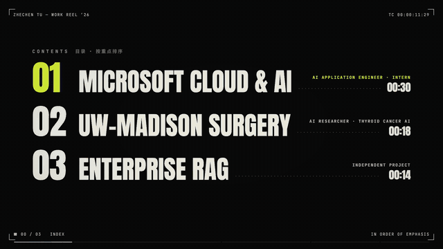
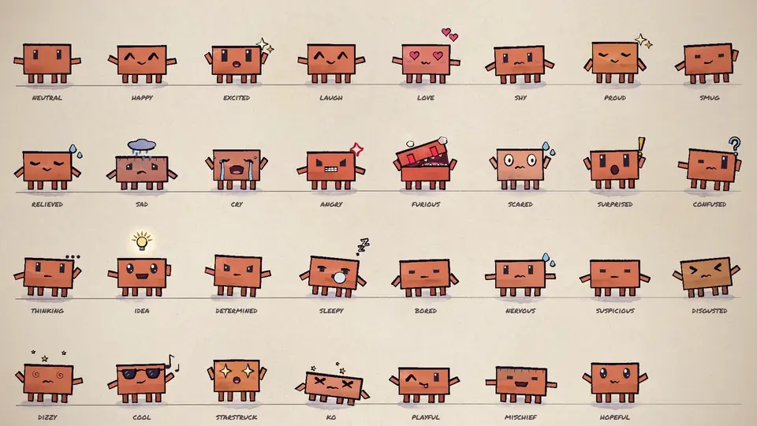
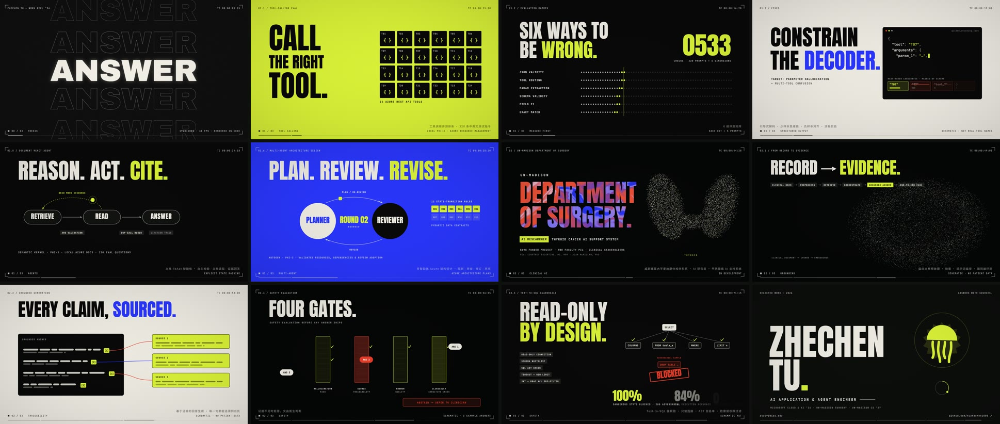

中国水墨 · 侠客过江
看笔触、墨色、留白与角色运动怎样一起组织。 作者公开样片，尚未在本机完整运行这个制作 Skill。
这里统一展示九支原作风格短片、动态字体 GIF、动态角色表情表和三项自制代表结果；游戏、源码 MV 与资料索引另有明确入口。
选择任一播放器查看动作、镜头、节奏与声音。这九支视频来自 lemo-opuscar，主画面由代码渲染；我们研究了制作方法并保存原作，没有重新生成这些样片。
看笔触、墨色、留白与角色运动怎样一起组织。 作者公开样片，尚未在本机完整运行这个制作 Skill。
看连续画面的水彩质感、景观变化和镜头运动。 作者公开样片，尚未在本机完整运行这个制作 Skill。
看角色表演、童话叙事和手绘风格的连续性。 作者公开样片，尚未在本机完整运行这个制作 Skill。
看文字层级、网格、节奏与转场。 作者公开样片，尚未在本机完整运行这个制作 Skill。
看产品窗口、光标、标题和卖点如何形成故事。 作者公开样片，尚未在本机完整运行这个制作 Skill。
看材质、灯光、特写与产品镜头的配合。 作者公开样片，尚未在本机完整运行这个制作 Skill。
看空间组织和镜头怎样解释复杂流程。 作者公开样片，尚未在本机完整运行这个制作 Skill。
看都市氛围、角色动作与镜头语言。 作者公开样片，尚未在本机完整运行这个制作 Skill。
看场景生长、光照和配乐怎样配合。 作者公开样片，尚未在本机完整运行这个制作 Skill。

真实动画 GIF，无音轨。观察字形、粒子和画面转场；本机尚未完整执行 kinetic-reel Skill。© 2026 tuzhechen2005 / MIT；基础工程 © 2026 John Heibel。
作者动态字体 Skill ↗本机研究时保存过作者视觉片段和接触表；公开页提供原作入口。我们尚未完整执行 painted-animation 制作流程。
查看作者手绘示例与制作流程 ↗
实际动画 WebP，展示角色的眼嘴、姿态与动作。它来自基础工程文档，本机没有在这个工程上制作新的故事影片。© 2026 John Heibel / MIT。
角色动画基础工程 ↗
接触表是静态多帧图，可看分镜；连续动作请看本节 GIF。
打开动态字体成片接触表六幕图像、运镜、转场与歌曲合成。整曲人物真实表演尚未完成。
实际 MiniMax API 输出、本地去绿、背景与歌曲片段合成。逐字口型和坐姿接触尚未验收。
读取真实网页、设计分镜、编写 Canvas，再逐帧导出 720p / 24fps / 576 帧；此版无音轨。
本机保存并运行了 PDoomVideo 原作场景源码、时间轴与音乐预览，可以查看各章场景。它是特定作品的工程；该预览并非已编码的完整 MP4。公开页保留原库入口，本机工程继续保存。
查看原作工程与章节 ↗研究原作、公开提示词与重制展厅，本机保存过展厅截图。资料库自身不执行视频生成。
研究代码、外部模型、已有素材剪辑和录屏的分类；本机接入静态资料 SVG。该统计图不是影片。
逐案效果与来源图鉴 ↗| 项目 | 已有研究与效果 | 对应入口 |
|---|---|---|
| JohnHeibel/PDoomVideo | 本地原作源码＋时间滑块＋音乐预览；此入口不是已编码的完整原作 MP4。 | 查看对应效果与入口 |
| lemomo-ai/lemo-opuscar | 9 支作者 MP4 已本地播放；本机尚未运行它的完整制作 Skill。 | 查看对应效果与入口 |
| dgreenheck/tidewater | 游戏和资源已本地构建，启动页已查看；完整游玩与设备兼容性尚未验收。 | 查看对应效果与入口 |
| riba2534/claude-opus-5-5-demo | 三个原作 HTML 已本地构建；骑行启动页已查看，完整游戏流程尚未逐项验收。 | 查看对应效果与入口 |
| diggerhq/shipvideo | 已保存原作者样片，并实际制作 24 秒六幕宣传片；通用任意 URL 自动服务仍待接入。 | 查看对应效果与入口 |
| makevoid/motion-graphics-music-video-skill | 作者原作仅有本地缩略图；我们已做整曲图片 MV＋5 秒真实 H3 演唱合成，逐字口型未验收。 | 查看对应效果与入口 |
| tuzhechen2005/opus-video-skills | 两段作者 GIF＋两张成片接触表；GIF 无音轨，本机未完整执行这两个生产 Skill。 | 查看对应效果与入口 |
| JohnHeibel/ClaudeAnimationBase | 作者动态 emotions.webp 已接入，展示表情与姿态；并非本机新生成的故事影片。 | 查看对应效果与入口 |
| yihui-dev/awesome-opus5-5-videos | 本地保存 Skillry 展厅截图；没有接入在线重制执行或把截图当视频。 | 查看对应效果与入口 |
| athemeroy/awesome-opus-5-5-videos | 本地 corpus-overview.svg 为静态资料图；用于研究分类，不是视频播放器。 | 查看对应效果与入口 |
尚未把所有 Skill 完整运行一遍，也未完成全部游戏的游玩验收。深入实作集中于歌曲 MV 和网页宣传片。
原作媒体分别标示作者；完整许可证、样片 CREDITS、所需署名与来源记录随站保留。这里播放已保存的文件，不调用生成服务。
查看逐文件许可与署名记录